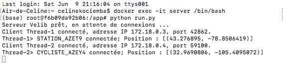
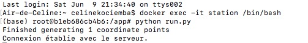
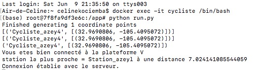

Documentation du Projet Fil Rouge: Velib¶
Le contenu du projet est librement disponible sur GitHub/projet_fil_rouge et permet à quiconque de contribuer à ce projet.
Membres : Anaïs EWOUDI / Michaël FONKOUA / Céline KOCIEMBA / Yves MOCTAR SIDIBE
Introduction¶
Présentation Vélib” Métropole¶
A l’air de l’environnement et de la sensibilisation de la population mondiale sur son empreinte carbone, comme le prouve la COP21, Velib” Metropole s’inscrit dans un système permettant de résoudre certains problèmes liés au trafic, comme l’émission de CO2 et de gaz polluants, mais aussi la diminution des embouteillages. Il reste dans la continuité de la politique nationale, et surtout dans certaines villes, comme Paris, d’encouragement d’utilisation des transports publics plutôt que les voitures, en particulier celles ne s’inscrivant pas dans du covoiturage. C’est un système utile surtout pour des courtes distances, utilisés le plus souvent en combinaison avec des systèmes de transport en commun comme le métro ou encore le bus. Velib” Metropole (contraction de « vélo » et « liberté ») est un système de vélos libre-service, implanté dans un premier temps sur Paris en 2007, puis dans certaines des plus grandes villes de France. Du 15 Juillet 2007 jusqu’à fin 2017, le système fût géré par JCDECAUX. Depuis 2018, la gestion a été déléguée à Smovengo, jusqu’à 2032. A ce jour, il existe :
- 692 stations, avec un projet d’extension pour atteindre, à terme, 1 400 stations;
- environ 20 000 vélos sont en circulation;
- en moyenne 150 000 locations sont effectuées par jour ;
- Service 24h/24 et 7j/7.
Problématique¶
L’analyse du système est nécessaire, pour permettre le contrôle et la réadaptation du syst-me si besoin en ait, et ainsi améliorer la disponibilité des vélos, et l’information du cycliste sur d’éventuelles alternatives si aucun vélo n’est disponible. Le projet de Vélib” Métropole est de s’étendre, ce qui pose aussi une problématique d’extension d’architecture, et de gestion de la maintenance par exemple.
Nous travaillons sur un projet déjà existant, un code déjà écrit en Python (dire le nom du fichier Python). Nous allons dans la continuité de ce projet. Dans un premier temps nous allons décrire les classes créer pour simuler différentes composants nécessaires à notre étude, comme des stations, des vélos, des cyclistes. Dans un second temps, nous allons mettre en place architecture « Client-Serveur », qui permette de commmuniquer les informations entre le serveur et les clients (ici les stations ou les cyclistes), qui permettront au cycliste d’avoir des informations sur la disponibilité des stations par exemple. A la fin, nous allons créer un DockerFile, qui permettra de mettre en place l’architecture Client-Serveur avec les paramètres des logiciels déjà prédéfinis, en créant une image Docker.
Tâches du Projet Vélib¶
Les tâches confiées du projet se décomposent comme suit :
1 - Documenter le code avec Sphinx
2 - Modifier le code pour le rendre client serveur
3 - Dockerisation du code
Classe « logger »¶
La classe « Logger » a été créée pour générer des logs.
Voici un extrait du code, qui est en détail dans la partie « Annexes »
import os.path
self.path = path # On crée une variable self.path et on lui donne comme valeur path
self.limit = limit_to_save_to_disk
self.logs = [] ## Pour rentrer le log
self.nb_logs = 0
if header:
if not os.path.isfile(path):
with open(path, "a") as f:
f.write(header)
f.write("\n")
Classe « Cycliste »¶
La classe « Cycliste » a été créée pour simuler des cyclistes. Plusieurs critères ont été sélectionnés pour ça, comme l’âge, le sexe, ou encore les compétences sportives, qui détermineront la vitesse du cycliste. Voici un extrait du code, qui est en détail dans la partie « Annexes »
from scipy.stats import norm
homme = "homme"
femme = "femme"
age_min = 14
age_max = 80
sexe = random.choice([homme, femme])
age = random.randint(age_min ,age_max)
sportif = random.choice([-0.5, 0, 2, 4, 6 ])
# Les chiffres qui vont suivre en paramètre ont été choisis au hasard comme référence
if age < 35 : facteur = norm( loc =1.2, scale=0.2 )
elif age < 50 : facteur = norm( loc =1 , scale=0.2 )
elif age < 90 : facteur = norm( loc =0.7, scale=0.2 )
On génère un nom, sa position,pour le cycliste, et pour la station, ce qui permettra de calculer une distance entre les 2.
Par la suite, différentes situations ont été créées :
- Prendre le vélo (Oui / Non)
- Simulation des kilomètres parcourus, de l’heure de départ, d’arrivée…
La classe « Trajet » permet de simuler un parcours effectué par un cycliste.
Classe « Vélo »¶
La classe « Vélo » permet de répertorier toutes les caractéristiques pouvant impacter un vélo :
- Problèmes potentiels sur le vélo
- Réparation nécessaires
- L’état du vélo
- Le statut du vélo (restitué ou non)
Voici un extrait du code, qui est en détail dans la partie « Annexes »
from scipy.stats import norm
import time
performance = norm( loc =0.9, scale=0.2 )
self.nom = "%s_%s"%(nom, time.time())
self.performance = performance.rvs(1)[0]
self.station = station
self.degradation = 0 # On part du principe qu'il n'y a pas de dégradation à l'initiale
self.performances = [] # état du vélo
self.debug = True # False
self.nb_km_trajet = 0
self.heures_rendu = []
self.disponible = True # statut du vélo
self.logger_reparation = logger("./../logs/velo_reparations.csv", header = "velo,n_message,time,performance")
self.logger_etat = logger("./../logs/velos_etats.csv", header = "velo,n_message,time,station.nom,performance,nb_km_trajet")
self.probleme_list = self.get_problemes_list() #Problèmes potentiels sur le vélo
self.n_message = -1
Classe « Station »¶
La classe « Station » permet de rentrer les paramètres d’une station :
- Nom ;
- Position ;
- Nombre de plots possibles (pour déposer un vélo) ;
- Nombre de vélos disponibles…
Voici un extrait du code, qui est en détail dans la partie « Annexes »
import random
import time
self.nom = parameters[0]
self.position = parameters[1]
self.nb_plot = random.choice([10,15,20, 30]) # Nombre de places
self.nb_libre = 0 # Nombre de places libres
self.nb_velos = self.nb_plot # On part du principe où toutes les places sont prises
self.velos = [] # Création d'une liste vide
self.n_message = -1
self.debug = False
self.avaries = [] # Avarie sur le vélo
self.arrete = False
self.liste_d_avaries = []
self.nb_fois_en_arret = 0
self.logger_dispos = logger("./../logs/stations_dispos.csv", header = "nom,n_message,time,nb_plot,nb_libre,nb_velos,lattitude, longitude")
self.logger_reparation = logger("./../logs/stations_reparations.csv")
self.logger_avarie = logger("./../logs/stations_avarie.csv", header = "nom,n_message,time,avarie")
Tout le code décrit précédemment sera utilisé dans la partie « Client - Serveur ».
Mise en place architecture « Client-Serveur »¶
On définit un Client - Serveur, un mode de communication à travers un réseau entre plusieurs programmes : l’un, qualifié de client, envoie des requêtes ; l’autre ou les autres, qualifiés de serveurs, attendent les requêtes des clients et y répondent. Dans notre projet, nous avons créé 3 programmes: un serveur, un client - station et un client - cycliste.
Serveur
Nous avons créé un script Python,appelé « run.py » dans le chemin du répertoire « Vlib_Client_Server/Server ». Voir le lien github du script suivant “run.py <https://github.com/mdfonkoua/projet_fil_rouge/blob/master/Vlib_Client_Server/Server/run.py>`_
qui va permettre de créer une liaison de socket, et le serveur se met en attente de connexion du client (station ou cycliste). C’est l’étape d’initialisation du serveur.
Dans le cas d’une connexion du client, le serveur accepte la connexion puis mémorise l’identifiant du client, son adresse IP, son numéro de port et sa localisation géographique. Le serveur communique avec le client pour confirmer la connexion. La liaison client-serveur perdurera tant que le client ne se déconnecte pas.
Avertissement
Après avoir suivi la partie « Aide », ouvrir une console pour lancer la commande « docker exec -it server /bin/bash » attendre la fin d’exécution de la commande précedente et voir si la console nous donne la main dans le conteneur « server » à partir du répertoire /app. lancer la commande « python run.py »
Client - Station
Ensuite, nous avons créé un script Python,appelé « run.py » dans le chemin du répertoire « Vlib_Client_Server/Station ». Voir le lien github du script suivant “run.py <https://github.com/mdfonkoua/projet_fil_rouge/blob/master/Vlib_Client_Server/Station/run.py>`_
Pour le cadre de notre étude, on génère aléatoirement le nombre de stations possibles, le nom des stations (avec une combinaison possible de 5 alphanumériques, avec leur position. Il enregistre une ligne contenant toutes les informations dans un fichier, enregistrant toutes les stations connectées au serveur. A partir de ce moment-là, on se connecte au serveur. Le nom de la station et sa position sont ainsi émis, avec un message sur le statut de la connexion. Comme expliqué précédemment, la connexion reste établie jusqu’à déconnexion du client.
Avertissement
Après avoir suivi la partie « Aide » pour lancer un docker, ouvrir une console pour lancer la commande « docker exec -it station /bin/bash » attendre la fin d’exécution de la commande précedente et voir si la console nous donne la main dans le conteneur « station » à partir du répertoire /app. lancer la commande « python run.py »
Client - Cycliste
Nous avons créé un script Python,appelé « run.py » dans le chemin du répertoire « Vlib_Client_Server/Cycliste ». Voir le lien github du script suivant “run.py <https://github.com/mdfonkoua/projet_fil_rouge/blob/master/Vlib_Client_Server/Cycliste/run.py>`_
La différence avec Client - Station, est l’ajout de la distance entre la station la plus proche, et le cycliste. En effet, la liste créée contenant toutes les stations connectées, va nous permettre de calculer la distance entre le cycliste et toutes les stations connectées, pour nous permettre de choisir la station la plus proche du cyliste.
Avertissement
Après avoir suivi la partie « Aide » pour lancer un docker, ouvrir une console pour lancer la commande « docker exec -it cycliste /bin/bash » attendre la fin d’exécution de la commande précedente et voir si la console nous donne la main dans le conteneur « cycliste » à partir du répertoire /app. lancer la commande « python run.py »
Dockerisation¶
Docker est une plate-forme permettant de développer, déployer et exécuter des applications avec des conteneurs.
La conteneurisation consiste à utiliser des conteneurs Linux pour déployer des applications. Une utilisation sur Windows est possible, après installation d’une VM.
Un conteneur est lancé en exécutant une image. L’image est un package exécutable qui inclut tout ce dont l’on a besoin pour exécuter un application dont :
- le code
- une exécution
- des bibliothèques
- des variables d’environnement
- des fichiers de configuration
Un conteneur est une instance d’exécution d’une image. Il s’exécute nativement sur linux et partage le noyau de la machine hôte avec d’autres conteneurs. Il exécute un processus discret, ne prenant pas plus de mémoire q ue tout autre exécutable,
L’objectif est de saisir un environnement d’exécution sous forme d’images. Ces dernières sont définies par le dockerfile. Voir le lien github du fichier suivant “Dockerfile <https://github.com/mdfonkoua/projet_fil_rouge/blob/master/Vlib_Client_Server/Config/Dockerfile>`_
L’accès à des ressources telles que les interfaces réseau et les lecteurs de disque est virtualisé dans cet environnement isolé du reste du système.
Il faut donc mapper les ports vers le monde extérieur et être précis sur les fichier que l’on souhaite « copier » dans cet environnement. Après avoir fait cela, la construction de l’application définie dans ce dockerfile se comporte exactement de la même manière partout ou elle s’exécute.
Les paramètres dans notre Dockerfile est l’utilisation d’Anaconda3, avec installation de pygeocoder pour la géolocalisation, création de deux répertoire /app et /logs et définition du travail dans le nouveau répertoire /app. Voici à quoi ressemble notre dockerfile que nous avons créé dans le chemin du répertoire « Vlib_Client_Server/Config »
# Utiliser un moteur d'exécution officiel de Python comme image mère
FROM continuumio/anaconda3:latest
#Commande
RUN pip install pygeocoder \
&& mkdir /app /logs
# Définir le répertoire de travail sur /app
WORKDIR /app
Le Docker-compose situé dans le répertoire « Vlib_Client_Server », pour le serveur et les 2 clients, va créer une image à partir du dockerfile présenté précédemment, entrer en paramètre le port , synchroniser notre répertoire local contenant notre script créé précédemment au répertoire /app de même pour /logs pour accéder au fichier suivant:
with open("./../logs/stations_dispos.csv") as f:
reader = csv.reader(f)
nom,n_message,time,nb_plot,nb_libre,nb_velos,lattitude, longitude
Station_azer6,0,1528378534.2925775,10,0,10,40.8597519,-123.5112522
Station_azet7,0,1528378932.6203423,20,0,20,45.7678379,-113.3342124
Station_azetw,0,1528400505.101629,20,0,20,48.2267692,-103.6174956
Station_azeym,0,1528400907.630543,20,0,20,28.191323,-82.40245
Station_azeyl,0,1528401092.2217212,20,0,20,39.9230051,-104.4188044
Station_azetm,0,1528472913.994924,10,0,10,45.9695216,-94.6958863
Station_azeyh,0,1528474061.517037,20,0,20,29.3136055,-94.8041015
Station_azerg,0,1528474825.6791272,30,0,30,44.1644143,-85.94889649999999
Station_azey5,0,1528474835.422983,30,0,30,42.664821,-88.5018959
Station_azet9,0,1528474894.1510055,15,0,15,38.4813306,-88.4993975
Station_azet5,0,1528475048.6729205,10,0,10,32.6895118,-113.9804262
Station_azer2,0,1528475211.9637976,20,0,20,43.2374625,-110.28348
Station_azeuq,0,1528475486.8801653,30,0,30,46.81313,-104.4794
Ce Docker-compose permet d’éxecuter plusieurs conteneurs:
1 - Serveur
2 - Client - Station
3 - Client - Cycliste
Voir le lien github du fichier suivant “docker-compose.yml <https://github.com/mdfonkoua/projet_fil_rouge/blob/master/Vlib_Client_Server/docker-compose.yml>`_
docker-compose up --build
Perspectives¶
Malgré le travail que nous avons réalisé, plusieurs axes de dévloppement peuvent être explorés. Une analyse comportementale des stations, et s’appuyant sur un ratio de disponibilité, qui peut varier en fonction de leur localisation géographique. Une idée pour cela serait de ne pas analyser le comportement des stations uCela executera les 3 images pour pouvoir exécuter le code Python.
Avertissement
Se placer dans le dossier « Vlib_Client_Server » et ouvrir une console pour lancer la commande ci-dessous
ne par une, mais de faire un rassemblement, créer des clusters de stations qui se ressemblent pour ensuite en étudier le comportement.
Une amélioration de plus serait de calculer la distance entre le cycliste et la station la plus proche, mais avec des conditions, propres au cycliste (on va par exemple essayer de trouver la station la plus proche pour déposer un vélo, ou pour en prendre).